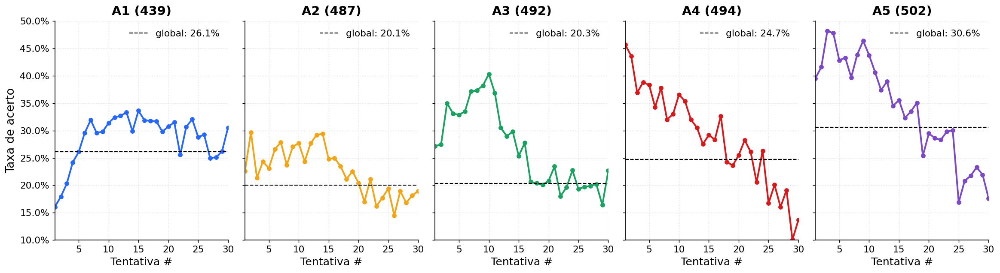
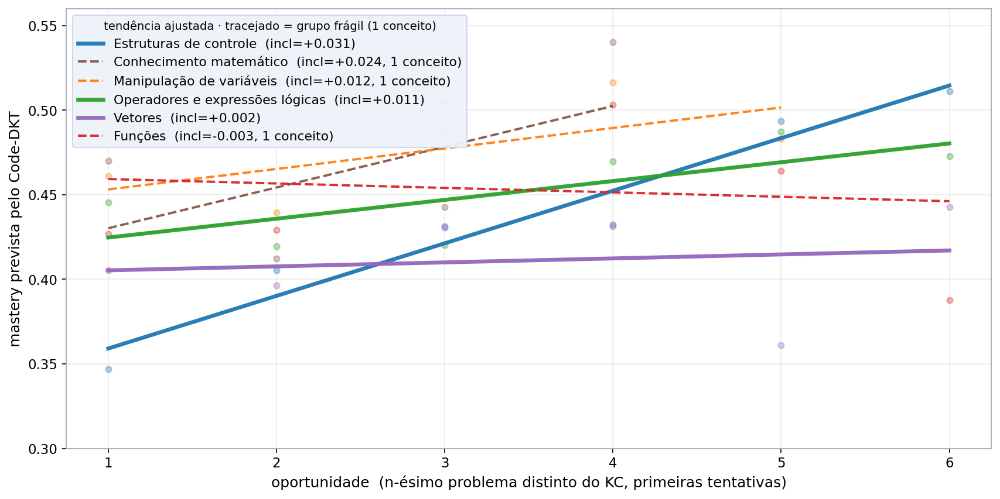

>Educational data mining e Knowledge Tracing
Engenharia da Computação
Análise do aprendizado de programação utilizando mineração de dados educacionais
Erick Miranda Viana
Leonardo Kuntz Oliveira
Victor Santos Borba
Orientador(a): Profa. Ma. Talita dos Reis Lopes Berbel
>agenda
- Definição do Problema
- Preparação dos Dados
- Modelagem e Avaliação
- Implantação
>introdução
Programar beneficia qualquer pessoa. Porém, o ensino de programação tem se mostrado complexo, com altos índices de reprovação e desistência nas disciplinas introdutórias de cursos de tecnologia.
Martins et al. (2024) trazem uma revisão sistemática da literatura, cujo objetivo é identificar os principais desafios enfrentados por estudantes durante a aprendizagem de programação de computadores.
Nosso trabalho busca auxiliar na elaboração de estratégias e métodos que melhorem o processo de ensino e aprendizagem de programação, promovendo melhores resultados acadêmicos.
Fonte: Martins, Marin e Alves (2024).
>mineração de dados educacionais
Nosso trabalho aplica o processo de mineração de dados educacionais (Educational Data Mining, EDM), área interdisciplinar que combina mineração de dados, estatística e aprendizado de máquina para apoiar decisões pedagógicas (Zorić, 2020). Tarefas típicas incluem classificação, agrupamento, predição e associação.
Fonte: Zorić (2020).
>as quatro fases da edm
- Definição do problema. Traduz um problema específico em um problema de mineração de dados; formula os objetivos e as questões de pesquisa.
- Preparação e coleta dos dados. Identificar, limpar e formatar os dados (até 80% do tempo); a qualidade dos dados é o maior desafio.
- Modelagem e avaliação. Selecionar e aplicar técnicas de modelagem e ajustar os parâmetros a valores ótimos.
- Implantação. Organizar e apresentar os resultados por meio de gráficos e relatórios.
O processo é iterativo: a saída pode iniciar um novo ciclo (Zorić, 2020).
Fonte: Zorić (2020).
>da edm ao knowledge tracing
Yağcı (2022) mostrou o valor de prever desempenho acadêmico para identificar estudantes em risco. Nos dispomos a trabalhar de forma similar, mas em vez de uma previsão única ao fim do curso, acompanhamos o conhecimento ao longo do tempo, levando em conta cada tentativa feita durante a resolução do problema, via knowledge tracing.
mineração de dados educacionais→predição de desempenho→knowledge tracing
Fonte: Yağcı (2022).
>o problema do kt binário
Modelos de knowledge tracing estimam, a partir do histórico de tentativas, a probabilidade de um estudante acertar o próximo problema. No nosso trabalho, eles são o instrumento central para representar o aprendizado em programação.
Shi et al. (2022) apontam que a maioria desses modelos, incluindo BKT e DKT, tratam as respostas dos estudantes apenas como corretas ou incorretas, ignorando seu conteúdo.
Daí a necessidade de modelos voltados a áreas com respostas estruturadas, como programação, matemática, ciências ou escrita, em que a forma da resposta importa tanto quanto o resultado final.
Fonte: Shi et al. (2022).
>sinal pedagógico perdido
Considere o cenário em que um estudante resolvendo um problema acerta parte do código, mas erra em algum dos passos. Sua submissão pode não ser compilada, ou compilar e estar errada, mas de qualquer forma sua resposta é registrada como incorreta.
Os modelos tratam essa tentativa de forma idêntica a uma completamente errada, e a previsão mais provável é de que o estudante não aprendeu nada do conteúdo abordado, mesmo tendo acertado parte da questão. O aprendizado parcial presente no código fica invisível.
Isso abre um espaço entre o que o knowledge tracing clássico enxerga e o que de fato o estudante aprendeu. Essa lacuna motivou a criação de modelos que são sensíveis a códigos.
Fonte: adaptado de Shi et al. (2022).
>AS QUATRO FASES DA EDM
Fonte: adaptado de Zorić (2020).
>o dataset csedm
Nosso dataset é o CSEDM, coletado de um curso introdutório CS1 em Java, durante a primavera de 2019 e divulgado na competição CSEDM 2021. Armazenado em ProgSnap2 (Price, 2020), um formato de base de dados que registra cada evento de programação do estudante (edição, compilação, execução), preservando o histórico completo das tentativas a cada problema.
413 estudantes, 5 assignments com 10 problemas cada, e 201 mil eventos.
Cada evento traz estudante (SubjectID), problema (ProblemID), tipo (EventType), nota (Score), timestamp (ServerTimestamp) e snapshot do código (CodeStateID).
Fonte: Price (2020); CSEDM 2021.
>como navegamos o csedm
Ao navegar o CSEDM, observamos como a participação e a taxa de acerto se distribuem entre os 5 assignments do curso.
Tabela 1 – Taxa de acerto por assignment (Spring 2019)
| Assignment | Alunos | Participação | Problemas | Taxa de acerto |
|---|---|---|---|---|
| A1 (439) | 386 | 93,46% | 10 | 26,15% |
| A2 (487) | 340 | 82,32% | 10 | 20,06% |
| A3 (492) | 361 | 87,41% | 10 | 20,34% |
| A4 (494) | 315 | 76,27% | 10 | 24,72% |
| A5 (502) | 306 | 74,09% | 10 | 30,62% |
Fonte: elaborado pelo autor sobre CSEDM (Spring 2019).
>como o aprendizado se manifesta
Para cada assignment, agregamos a taxa de acerto em função da tentativa ordinal (1ª tentativa de qualquer problema, 2ª, 3ª, ...) sobre todos os 413 estudantes do Spring 2019.
Figura 1 – Curvas de aprendizado por assignment (Spring 2019)

Fonte: elaborado pelo autor sobre CSEDM (Spring 2019).
No A1, os estudantes precisam de várias tentativas para acertar; no A5, já acertam logo nas primeiras.
>engajamento e desempenho
A X-Grade é a nota final normalizada do estudante na disciplina (escala 0 a 1). Comparamos sua distribuição pelos discentes agrupados por quantos assignments completaram.
Figura 2 – X-Grade por número de assignments completados (Spring 2019)

Fonte: elaborado pelo autor sobre CSEDM (Spring 2019).
Quanto mais assignments o estudante completa, maior a mediana e menor a variância da nota final.
>aproximação ao protocolo
Nosso pré-processamento segue o protocolo de Shi et al. (2022) como baseline de comparação, com ênfase em análise.
Dos 413 estudantes brutos do CSEDM, mantivemos 410 com pelo menos 3 tentativas de execução. Esse subset apresenta 23,68% de tentativas corretas, mesma proporção reportada no paper, mais um sinal de que estamos trabalhando sob os mesmos dados, viabilizando a comparação direta dos resultados dos nossos modelos aos resultados dos modelos treinados por Shi et al. (2022). Em seguida, dividimos em 328 estudantes para treino e 82 para teste, na proporção 80/20 com semente fixa.
Limitamos cada sequência às 50 últimas tentativas. A mediana é 32 tentativas por estudante e assignment; 28% dos pares ultrapassam 50, com cauda longa até 272.
Fonte: adaptado de Shi et al. (2022).
>AS QUATRO FASES DA EDM
Fonte: adaptado de Zorić (2020).
>conhecimento como componentes
Modelos de knowledge tracing rastreiam unidades atômicas de conhecimento ao longo do tempo, chamadas knowledge components (KCs). O conceito apareceu como "regras" ou "habilidades" na primeira formalização do knowledge tracing por Corbett e Anderson (1995), no contexto de um tutor inteligente para programação em Lisp.
A escolha de como definimos um KC determina o quanto conseguimos diagnosticar do que o estudante já domina. Quanto mais granular o KC, mais informativa é a inferência sobre onde aplicar reforço pedagógico.
Neste trabalho, adotamos o ProblemID como KC durante o treino dos modelos, seguindo o protocolo de Shi et al. (2022). Ou seja, cada problema do CSEDM equivale a um KC, e treinamos um modelo por assignment.
Fonte: Corbett e Anderson (1995); Shi et al. (2022).
>o modelo escolhido
O modelo que escolhemos foi o Code-DKT, desenvolvido por Shi et al. (2022), porque leva em consideração o código do estudante para sua previsão.
Linha do tempo do knowledge tracing
1995
Corbett e Anderson
BKT, probabilidade Bayesiana por habilidade.
2015
Piech et al.
DKT, RNN sobre o histórico de acerto/erro.
2022
Shi et al.
Code-DKT, DKT + caminhos da AST com atenção.
>dentro do code-dkt
A cada submissão, o Code-DKT extrai a AST com javalang, transforma cada caminho folha-a-folha em vetor com code2vec, pondera com atenção e alimenta o LSTM.
Pipeline Code-DKT: javalang → AST → code2vec → atenção → LSTM
Figura – AST com caminho folha-a-folha em destaque

Fonte: adaptado de Shi et al. (2022).
>o que o code-dkt olha
Diferente de BKT e DKT (que só veem acerto/erro), o Code-DKT lê o código. Nesta submissão incorreta de um problema de condições compostas, o token de maior atenção foi o operador &&:
1 2 3 4 5 6 7 8 9 10 11 12 13 14 15
public int dateFashion(int you, int date)
{
if (you <= 2 || date <= 2)
{
return 0;
}
else if (you < 8 && date < 8)
{
return 1;
}
else if (you >= 8 || date >= 8)
{
return 2;
}
}O modelo foca no construto que define o conceito (expressões booleanas compostas), o que torna o diagnóstico interpretável para o professor: é a base da ferramenta proposta para o TCC 2.
Fonte: elaborado pelos autores (Code-DKT, Shi et al., 2022; submissão real do CSEDM, problema dateFashion).
>code-dkt no csedm
Comparamos os três modelos por assignment no test set do CSEDM Spring 2019; números são médias sobre 10 seeds.
Tabela 2 – First-attempt AUC por modelo e assignment (%)
| Modelo | A439 | A487 | A492 | A494 | A502 |
|---|---|---|---|---|---|
| BKT | 63,21 | 68,40 | 54,20 | 57,81 | 56,92 |
| DKT | 75,56 | 76,70 | 82,05 | 80,17 | 80,78 |
| Code-DKT | 73,27 | 79,56 | 86,12 | 81,85 | 84,98 |
| Shi (2022)* | 75,74 | – | – | – | – |
* Paper Shi reporta apenas A1, equivalente a A439. First-attempt AUC é a métrica primária: mede transferência entre problemas e evita autocorrelação intra-problema (Shi et al., 2022, §5).
Fonte: elaborado pelo autor (10 seeds); Shi et al. (2022) Table 2.
>extração automática de kcs
Construímos um pipeline de cinco etapas, baseado em Duan et al. (2025), para extrair knowledge components do CSEDM.
Figura – Pipeline de extração automática de KCs
Sampling n=5por problema → LLMKCs brutos → ClusteringSentence-BERT → Rotulagemnos clusters → Q-matrixpor assignment
Fonte: elaborado pelo autor; adaptado de Duan et al. (2025).
Como o CSEDM disponibiliza apenas as respostas dos estudantes sem os enunciados dos problemas, extraímos os KCs a partir das submissões corretas para identificar quais conceitos cada problema exercitava. Amostramos n=5 respostas corretas por problema antes da geração para tentar mapear as diferentes soluções possíveis para o mesmo problema.
>retomando o problema
“A compreensão dos conceitos técnicos da programação pode ser considerada um desafio complexo. Esta é a dificuldade mais comum entre os estudantes, mencionada por 13 autores” (Martins, Marin e Alves, 2024, p. 19).
Dificuldades enfrentadas pelos estudantes e o número de ocorrências nos estudos analisados por Martins et al. (2024):
Fonte: adaptado de Martins, Marin e Alves (2024).
>retomando o problema
“Destaca-se que o entendimento das estruturas de controle é o conceito mais desafiador para os alunos, citado por 10 autores” (Martins, Marin e Alves, 2024, p. 20).
Martins et al. (2024) subdividem essa dificuldade em conceitos técnicos específicos (nº de autores que citam cada um):
Fonte: adaptado de Martins, Marin e Alves (2024).
>kcs semânticos extraídos
Os KCs semânticos extraídos pelo nosso pipeline cobrem as dificuldades de Martins, Marin e Alves (2024), mapeando cada dificuldade conceitual a padrões específicos de código.
Figura – KCs semânticos extraídos por dificuldade
Fonte: elaborado pelos autores, com base em Duan et al. (2025) e Martins, Marin e Alves (2024).
>evolução por dificuldade
Com os KCs extraídos ligados às dificuldades de Martins, observamos como o Code-DKT evolui em cada uma delas ao longo dos problemas do CSEDM.
Figura – Curvas de aprendizado do Code-DKT por dificuldade de Martins

Fonte: elaborado pelos autores (Code-DKT, Shi et al., 2022; dificuldades de Martins, Marin e Alves, 2024).
>AS QUATRO FASES DA EDM
Fonte: adaptado de Zorić (2020).
>proposta da aplicação
Este processo pode ser instrumentalizado para professores. Propomos uma aplicação docente que organiza o fluxo em seis etapas, com gesto humano na validação dos knowledge components.
Figura – Fluxo da aplicação docente proposta
Import ProgSnap2dados dos estudantes → Extração de KCsautomática, Duan et al. (2025) → Docente validaedita, adiciona ou remove → Preparação dos dadossequências por estudante → Code-DKTprediz turma e individual → Dashboardestado de aprendizado
Fonte: elaborado pelo autor; baseado em docs/tcc2_prototipo.html.
O professor consegue mapear os padrões da turma e ajustar suas aulas conforme o estado de aprendizado, individual e coletivo.
>AS QUATRO FASES DA EDM
Fonte: adaptado de Zorić (2020).
>obrigado